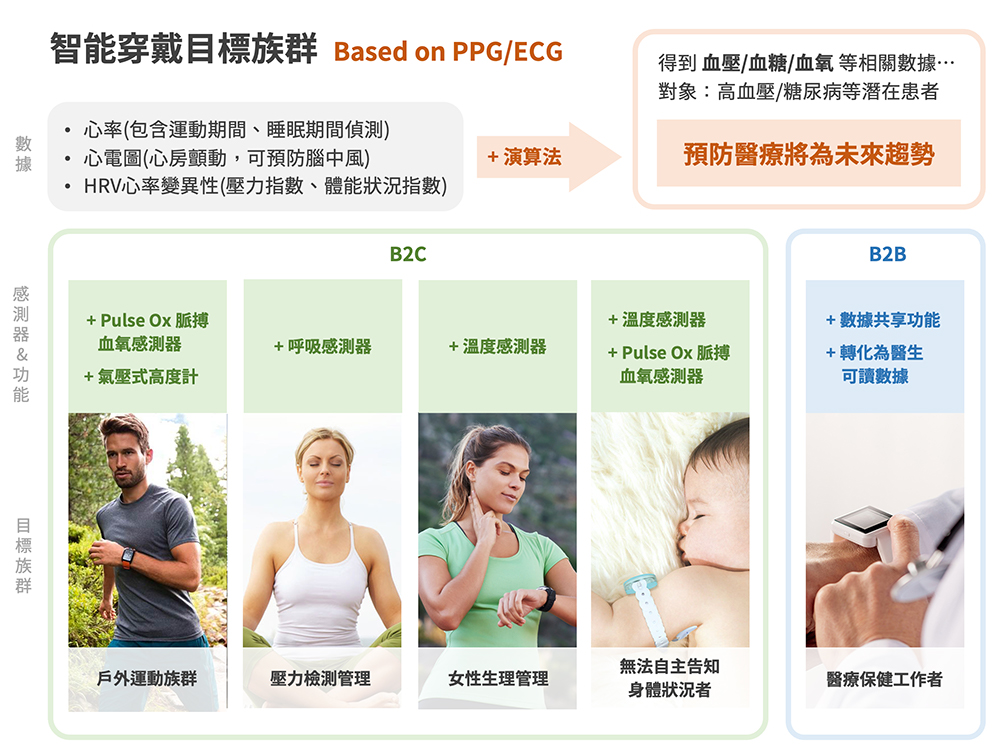
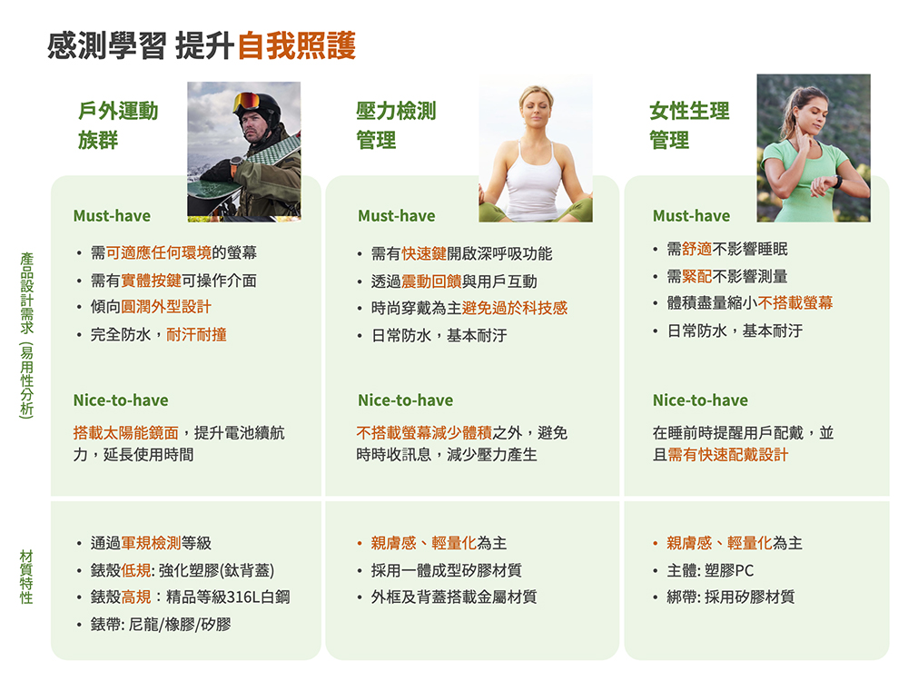
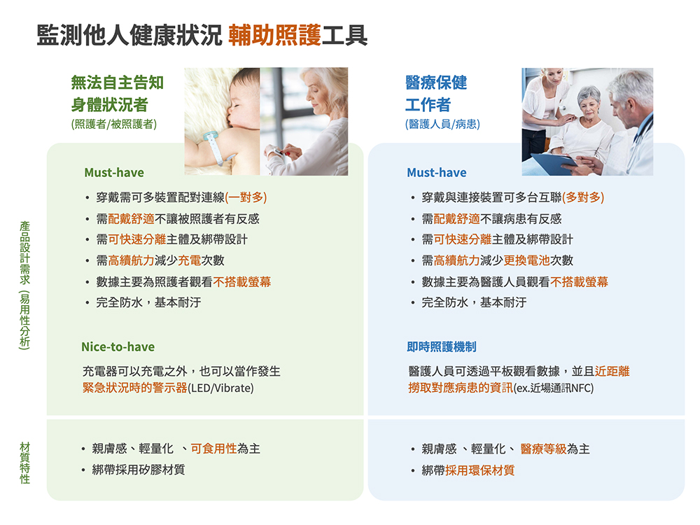
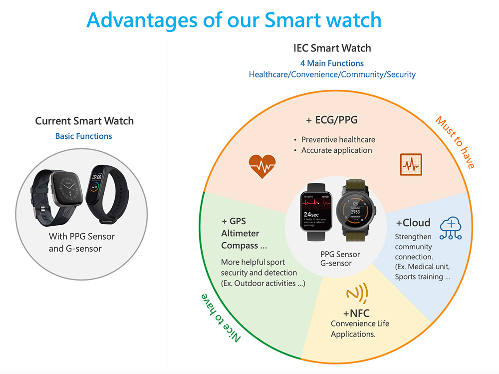
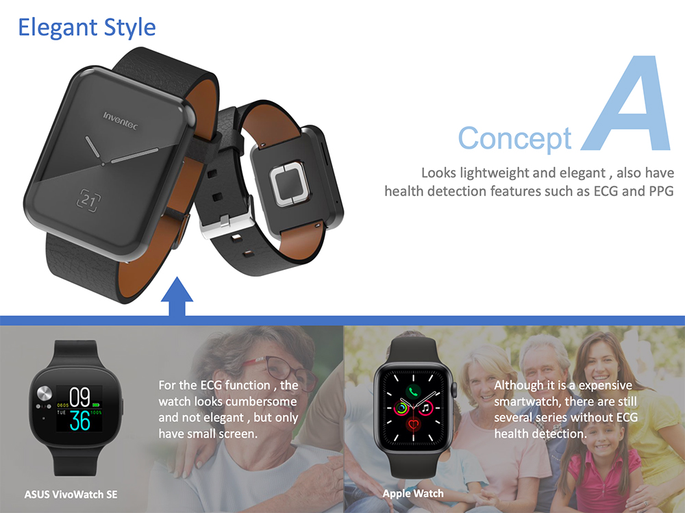
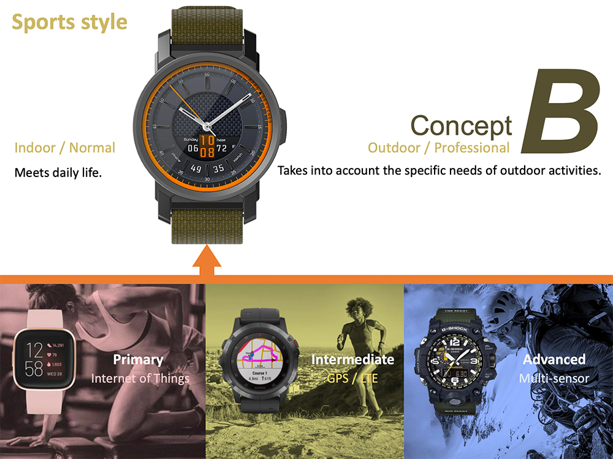
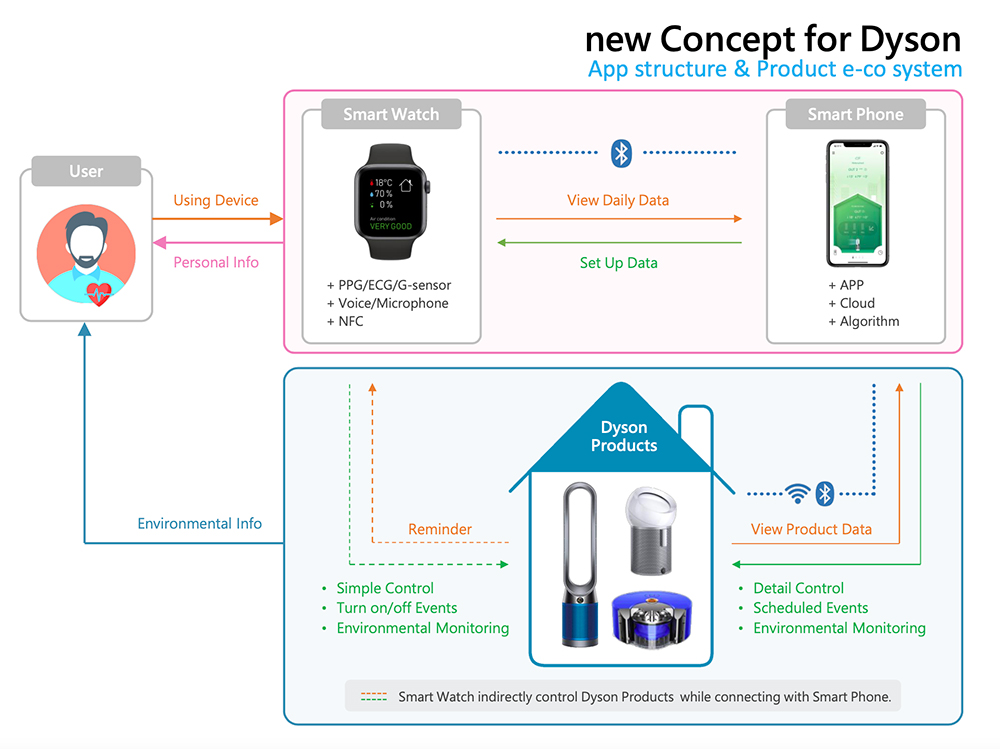
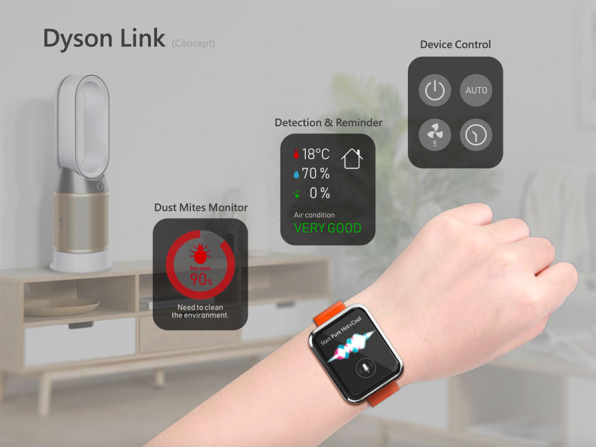

Brief
我們擁有ECG/PPG演算法技術，想要將產品包裝為偏向醫療的智能穿戴裝置。
一開始並沒有明確目的，所以需要無限制的發想，並蒐集市面上偏向醫療的穿戴裝置(含ECG/PPG)。到後面從女性需求，導向到希望可以推給Dyson客戶，讓他們知道我們有這樣的技術。
因此，我們發想了智慧穿戴裝置從醫療健康相關、女性健康需求，到Dyson相關技術的提案。
Target
Role
帶領ID同仁執行前期研究，從用戶/場景/需求切入，運用市場現況調研、競品分析、用戶需求/期待分析等等方法進行研究
Pain Point
產品商業模式的期盼
透過公司的演算法技術，與客戶的品牌行銷力，建立整個長期的商業模式。讓產品可以持續的在市場上面保持競爭力。
面臨的挑戰
公司有很好的技術及商業策略，但是想要的太多，所以有時候沒有這麼明確的產品定位出來，導致在研發階段時，產品功能及架構不明確，都是比較大方向的去想，初期比較沒法收斂。
市場現況與競品分析
市面上其實有很多消費型穿戴裝置，但大部分產品只有基本健康/運動偵測功能，所以我們的產品要做出區隔性，就必須朝專業醫療穿戴為方向，當然技術方面也會相對比較有挑戰性。
於是我們針對市面上 PPG/ECG 穿戴裝置做蒐集，並且加以分類，分析各別的產品走向，從中找出還可發展的產品機會點。
我們的詮釋
從上述我們分析出的五大類型產品，再更深入探討其產品目標族群及設計需求。
探討及發想方向：
因此我們得出以五大類型產品的設計需求(Must-have/Nice-to-have)，以及產品的材質特性：
 Highlight
從前期的UX研究分析結果，最終決定發展的智慧穿戴裝置功能，如下圖：
以及針對智慧穿戴裝置所需的功能及硬體空間，發展為兩款ID設計走向：
Concept A (Elegant / Simple / Neutral)
Concept B (Mechanical / Professional/Sports)
另外，我們也針對Dyson客戶增加了相關功能及概念設計，將其產品及智慧穿戴裝置建立一個生態鏈，使得產品與產品之間產生高度連結，並且走向更智能化。
 Process Point
Self-Review
如何在前期研究分析時間有限的情況下做到最大產出
如何在時間有限的情況下，做出一份有深度且有幫助的研究分析，是UX需要具備的一項技能。因為你永遠不知道老闆會給你多少時間，因此當任務來的時候，需要立馬的知道在有限的時間內能做多少研究分析，以及報告產出的內容多寡。
目標及產品定位不明確以致於難以收斂
初期並沒有明確的目標及產品定位，就是希望能做出包含PPG/ECG功能的穿戴裝置，因此必須要從了解市場現況開始，因此花比較多時間在市場調研。但當研究結果發現，含PPG/ECG Sensor的智慧穿戴裝置其實已經是非常普遍的，真正需要了解的是要拿這些感測器去產生什麼樣對用戶有意義的Data，那才是價值所在。
因此，如果重來一次，會希望有更多的到間去探討不同的感測器互相交叉比對後，透過演算法可以產出什麼樣的Data來幫助用戶。
需建立快速給予ID設計師建議的方法
一前面有提到的，除了在軟體功能面之外，智慧穿戴產品要「長」成什麼樣子才算合理，也是在這個專案很重要的一環。因此當ID設計師期待著你給予方向時，UX就必須給出透過研究分析後的產品發展方向可能性。
因此，此專案有一大部分時間是在探討產品尺寸、外觀、適配性、以及材質等等，使得ID設計師可以產出後續的Concept proposal。如果可以建立一套快速給予ID設計建議的研究方法，將會讓此專案執行的更順暢。